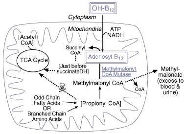

B12/Folate Problem set
Question 4: A second reaction requiring B12
Tutorial to help answer the questionBuildup of which metabolite in serum is a specific indicator of a vitamin B12 deficiency?
A. methylmalonic acid B. methylmalonyl CoA C. N5-methyl THF D. methionine E. succinyl CoA
Tutorial
The methylmalonic aciduria connection

Fig. 4 - Buildup of methylmalonate and propionyl CoA in B12 deficiency
| Methylmalonyl CoA mutase catalyzes one of only two known B12-requiring reactions, and the only one to occur in mitochondria. B12 must first be converted to its adenosyl-B12 form before it can serve as a cofactor for this enzyme. Disruption of this reaction leads directly to methylmalonic aciduria, with associated neurological symptoms and learning deficiencies. A contributing factor may be a secondary backup of propionyl CoA which may substitute for acetyl CoA in the citrate synthase reaction to form methyl citrate, a TCA cycle poison. Presumably, this scenario is particularly serious for neural tissue due to its high oxidative demands. Now on to folate metabolism... |


Department of Biochemistry and Molecular Biophysics
The University of Arizona
January 31, 2000
Contact the Development Team
http://biology.arizona.edu
All contents copyright © 2000. All rights reserved.